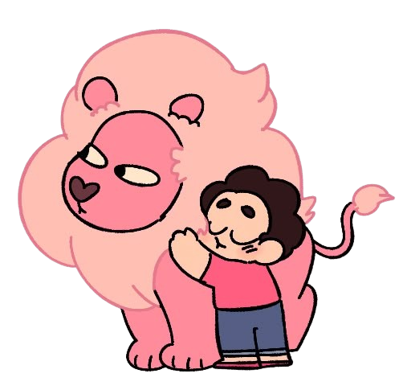

Como viveu?
Steven é filho de Rose Quartz (Diamente Rosa) e Greg, nascido da fusão entre a pedra dela e o DNA dele, já que Rose abriu mão de sua forma física para criá-lo. Ele foi criado principalmente pelo pai e depois passou a viver com as Crystal Gems para aprender a usar seus poderes. Quando bebê, já demonstrava habilidades mágicas. Antes da série, teve momentos importantes, como conhecer Connie pela primeira vez. Na 5ª temporada, Steven é levado ao Planeta Natal das Gems, onde enfrenta julgamento pelas ações de sua mãe. Ele tenta assumir a culpa, mas surgem dúvidas sobre o que realmente aconteceu com Diamante Rosa. Durante esses eventos, ele foge, conhece Gems fugitivas e acaba salvando Lars, trazendo-o de volta à vida com poderes especiais. De volta à Terra, Steven lida com as consequências de suas escolhas, conflitos com amigos (como Connie) e novas ameaças, incluindo o medo do retorno das Diamantes. Ao mesmo tempo, ajuda seus amigos, enfrenta mudanças na sua vida e mantém contato com Lars, que continua no espaço.